machinesMemory
machinesMemory is a multi-screen art installation that presents the idea of a machine's memory. Neural network algorithms bring new possibilities for artistic practices; artists consider them to be independent entities that generate artworks beyond human control.
This experiment explores aesthetic values of machine learning constructions—not the methodology of building models—but using machine-generated data as material. 1,000 phone photos were used to train a styleGAN model; the generated images contain abstracted memories that machines "own" in an ontological sense.
 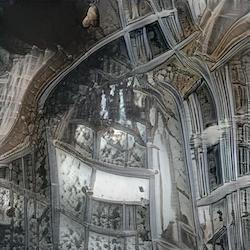
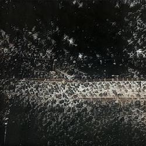
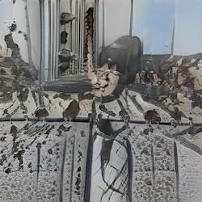
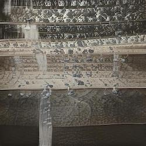
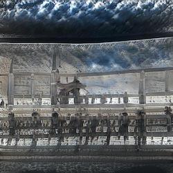
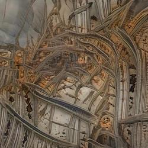
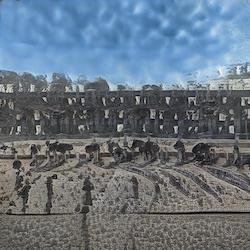
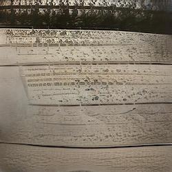
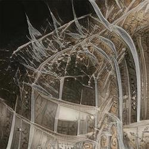
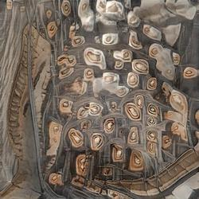
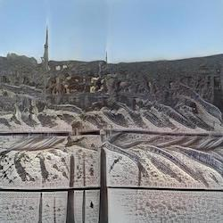
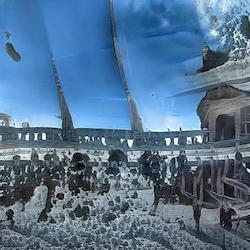
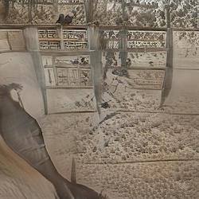
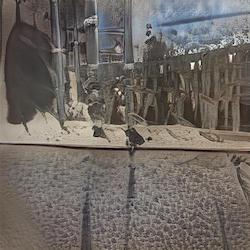
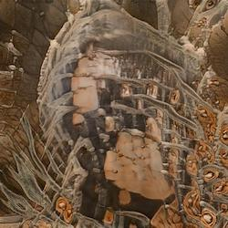
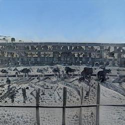
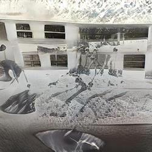
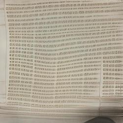
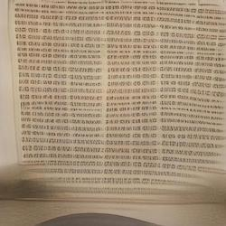
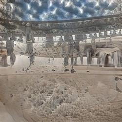
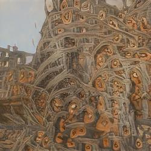
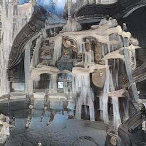
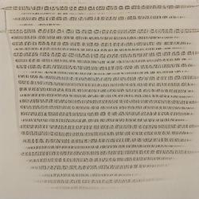
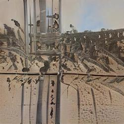
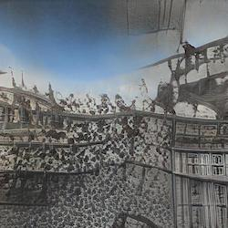
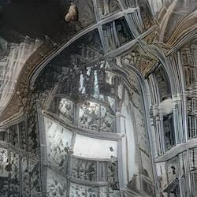
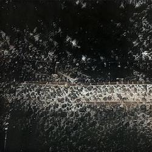
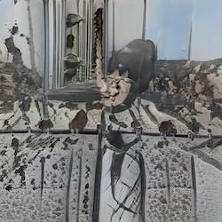
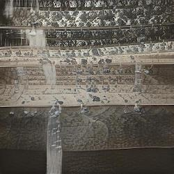
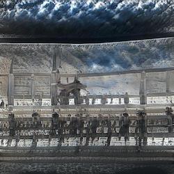
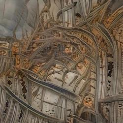
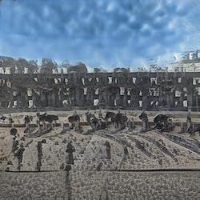
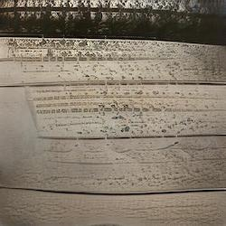
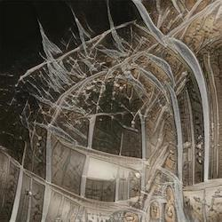
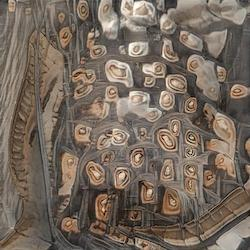
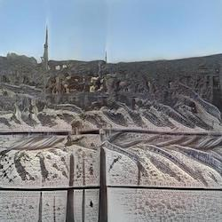
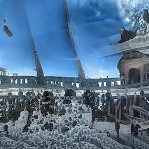
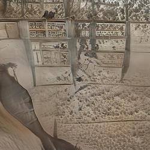
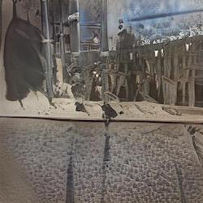
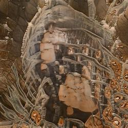
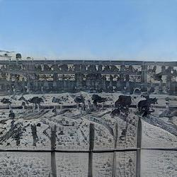
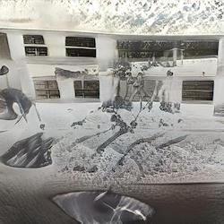
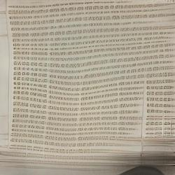
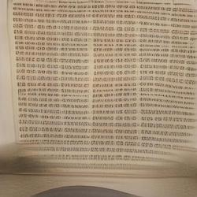
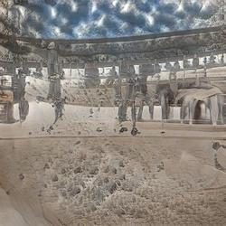
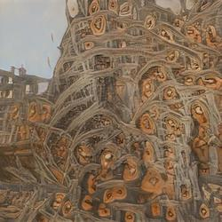
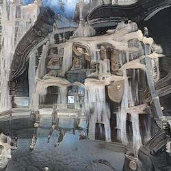
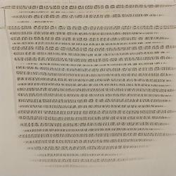
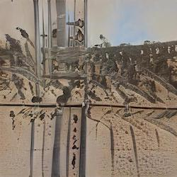
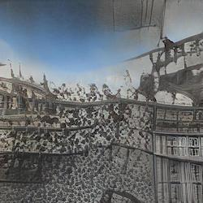


Feature Points Extraction
I split feature points from machine-generated images into groups and assign indexes under each sample. Humans cannot actively extract these points—machines do—yet we can read what they represent.

Machine Independence
The project stresses machine independence. Machine-generated images are materials that belong to the machine; I try to understand them by entering the "black box" via image-processing algorithms, revealing meaningful data and their patterns.